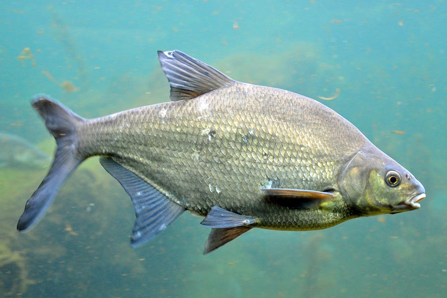
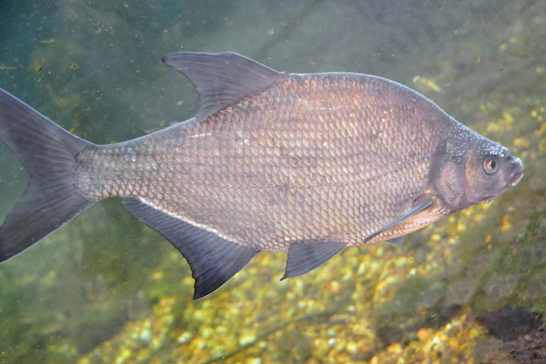

Leszcz Leszcz (Abramis brama) to dość duża ryba z rodziny karpiowatych,  pospolita w naszych wodach. Ryba ta ma bocznie spłaszczone ciało. Jest ono silnie wygrzbiecone. Na grzbiecie znajduje się niewielka płetwa grzbietowa. Ubarwienie jest srebrzyste, złotawe lub brunatne. Grzbiet jest ciemny. Młode osobniki mają szaro-niebieskie płetwy. Osobniki dorosłe mają płetwy czarne. Płetwa odbytowa jest długa i zawiera od 24 do 30 miękkich promieni. Otwór gębowy jest wysuwalny, podobny do ryjka. Zęby gardłowe są ułożone w jednym szeregu.
Występowanie i środowisko
Ryba ta występuje w Europie za wyjątkiem Półwyspów Iberyjskiego, Apenińskiego i części Bałkańskiego. Można ją spotkać w wodach stojących śródlądowych oraz w wolno płynących rzekach, a także w wodach słonawych, a więc w Bałtyku. Preferuje zbiorniki z mulistym dnem.
Tryb życia i zachowanie
Prowadzi stadny tryb życia. Żyje 10-14 lat, maksymalnie 20 lat.
Pożywienie
Leszcz wykopuje z mułu bezkręgowce takie jak ochotki, skąposzczety, skorupiaki i mięczaki. Może się odżywiać także planktonem.
Rozmnażanie
Rozród ma miejsce wyłącznie w wodach słodkich. Tarło przypada na maj i początek czerwca. Odbywa się ono na  płyciznach i w starorzeczach. Samica jaja składa na dnie lub roślinach wodnych. Może ich złożyć nawet 600 tysięcy, zwykle jednak 12-300 tysięcy. W Polsce leszcze są zdolne do rozrodu po 6-7 latach.
Ciekawostki
Leszcz jest cenioną rybą przez wędkarzy ze względu na bardzo smaczne mięso. Jest też obiektem połowów sportowych. To jedna z najczęściej łowionych ryb przez wędkarzy.
Okres ochronny: nie ma
Wymiar ochronny: nie ma
Dobowy limit połowu: nie ma
Rekord Polski: 6,9 kg 76 cm